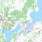
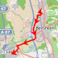

.kml
Achavi
Coord:
Please select the maps you want to display
Sattelite
Google
Yandex
Here
Bing
ESRI
Map
Google
Yandex
OSM
2GIS
Russia
Wiki

GGC250
Russia
OSM & tools
Waze
Strava
Qwant
Vector
Mapillary
Topo
Outdoor
Sputnik
Not updated
Brouter
Photo
Navitel
JOSM
Edit in JOSM
Local projects
OSM RU
Russia
Chepetsk
Post-Soviet
BestMaps
Russia
OSM BY
Belarus Vector
Mapy
Czech Republic
Please select 2 or 3 maps
Yandex
Bing
Here
ESRI
Yandex
OSM
2GIS
Wiki
Topo
Sputnik
Compare maps
Compare
Compare proceed
Save settings
Cancel

 .kml
Achavi
.kml
Achavi

 QwantVector
Mapillary
QwantVector
Mapillary
 TopoOutdoor
TopoOutdoor

 Navitel
Navitel
 JOSM
JOSM Google
Google
 Here
Here Bing
Bing ESRI
ESRI OSM
OSM 2GIS
2GIS Wiki
Wiki OSM RU
OSM RU
 BestMaps
BestMaps OSM BY
OSM BY Mapy
Mapy